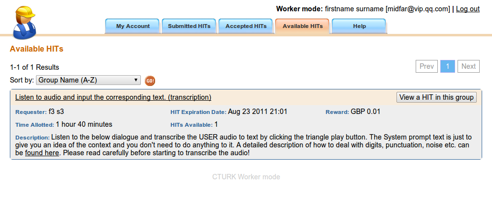
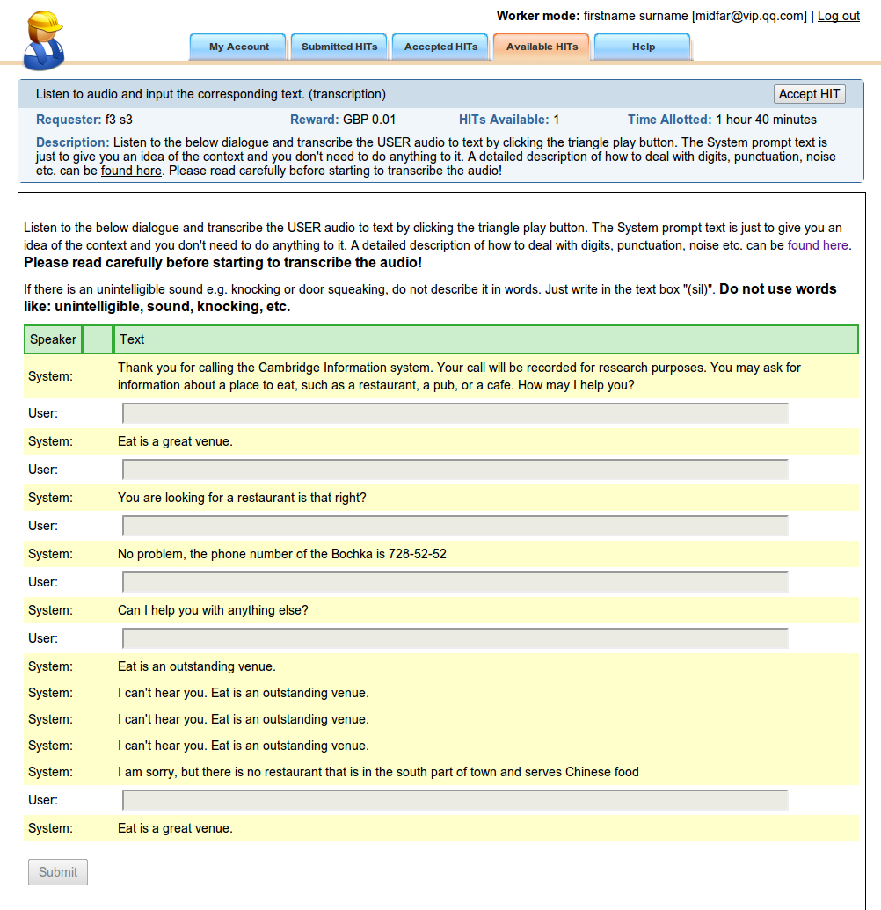
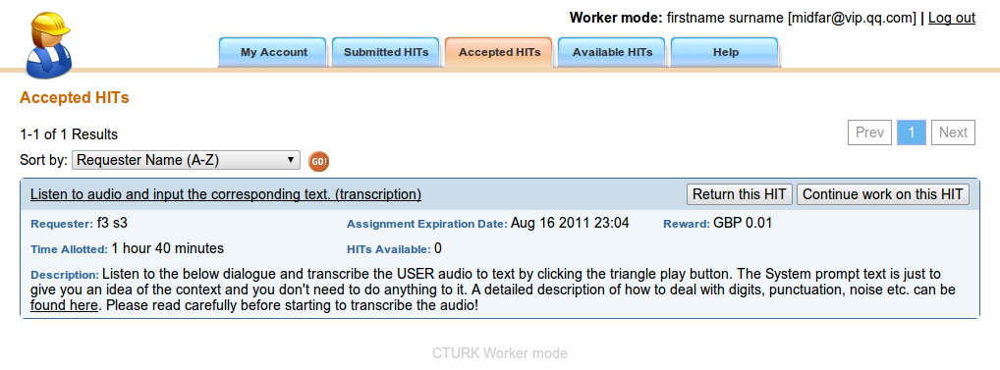
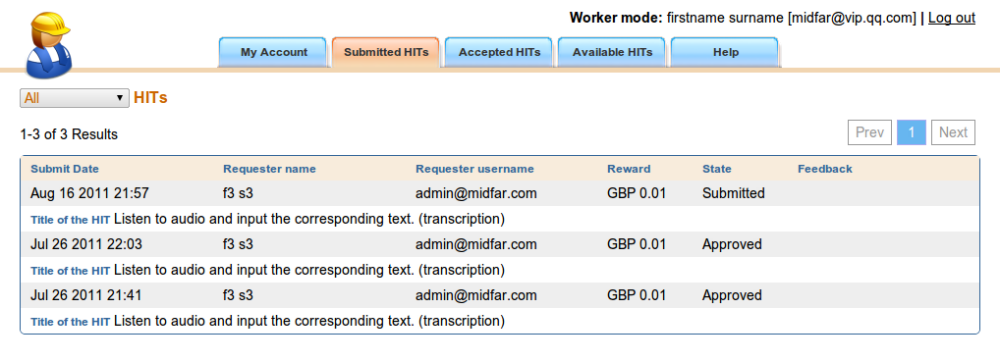
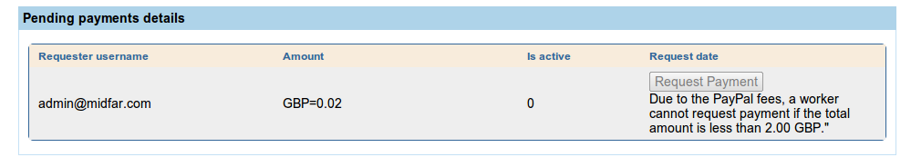

Help
The aim of CTURK is to automate process of conducting experiments with subjects participating in a set of various task, called HITs. For example, a HIT can be an evaluation of spoken dialogue system or transcribing a set of audio recordings.
The main use cases of CTURK are:
- Register subjects
- Let subjects conduct evaluation
- Collect statistics about the executed evaluations
- Pay subjects
In the CTURK framework are two types of users: requesters and workers.
The requesters publish work on the CTURK in the form of HITs and pay workers for their succesful completion of the HITs.
The workers complete the puchlished HITs, wait for their work being accepted and when they earn a minimum amount of money then they can request to be paid.
The next sections provide basic information on how to corectly and efficiently use the CTURK famework.
Creating an account
As a user who can see this help, you already created your account and sucesfully loged into the CTURK. However, it will be helpfull to review all the entered information during registration and ephasize the important parts.
When registering, you had to provide:
- User name
- Password
- Paypal account email
- Title
- First name
- Surname
- Gender
- Building name
- Street name
- City name
- Postcode
Please, note that all this information must be accurate to garantee successfull payment for you work. Especially, pay attention to the Paypal account email as it will be used for the automated payments. You can review the information you provided during registration here. To edit the data, click on the Edit button in the "My Info" section. Please do not forget to submit any changes. You can always cancel your modifications.
Log in
Log in functionality is available here. You have selcet whether you want to log in as requester or worker. Please select Worker as only this option is available for you.
After login, you are redirected to your details page. If you want start to work on the HITs then go to the "Available HITs" section, which you can find in the main menu.
Available HITs
Prior completing any work, you have to select a HIT you want to work on. All available HITs are listed in the "Available HITs" section in the main menu.
For example, you might to see something similar to:

Clik on the "View a HIT in this group" button to see a preview of a HIT. A preview of a HIT, enables a user to see what type of work is reqiuered and decide whether the user wants to participate. If the user wants to complete the selected HIT then the user clicks on the "Accept HIT" buton.
Definiton of terms:
- Time Alloted - define how much time you have for acompletion of this HIT. If it is not completed in the given time then it is automatically returned and it will be available to another users.
- HIT Expiration Date - define date until the HIT is available for completion.
- Reward - define amount of money of particular curency which will be paid for sucesfull completion.
- HITs Available - define number of HITs of the same type available for the current worker.
Please note that the Submit button is still disabled. It will be enabled once the HIT is accepted and you provide reqiuered information.
For example, you might to see something similar to:

Completing the accepted HITs
Once the HIT is accepted, you can complete the work requiered by the HIT. The type and the amount of work varies between HITs. The different complexity of HITs is compensated be appropriate reward.
When the task is completed, you can submit the HIT by clicking on the Submit button. All submited HITs are listed in in the "Submitted HITs" section in the main menu.
If you do not submit the accepted then it stays asigned to you and you have certain time (it depend on the HIT configuration) to complete and submit the results. All accepted HITs, which were not completed or returned, are listed in the "Accepted HITs" section in the main menu.
Alternatively, you can return the HIT by clicking on the "Return HIT" button. The retuned HIT will become available to another users.
List all accepted HITs
All accepted HITs which were not completed or returned are listed in the "Accepted HITs" section in the main menu.
For example, you might to see something similar to:

You can either return the HIT by clicking on the "Return this HIT" button and make it available to another users or complete the HIT by clicking on the "Continue work on this HIT" button.
List all submitted HITs
To check status of all submitted HITs can be perfomed in the "Submitted HITs" section in the main menu.
For example, you might to see something similar to:

The status can have three values:
- Submitted - the newly submited HIT is waiting for the requester to be accepted or rejected. If the requester does not act then it is accepted automatically after some time which depends on the configuration of the HIT.
- Approved - the HIT was accepted by the requester and the it will paid for by the requester.
- Rejected - the HIT was rejected and feedback should be provided in this case. As the work was rated as unaccepteblem, the requester does not have to pay for this HIT.
- Closed - the reward for this HIT was aklready paid by the requester to the worker.
Request payment
Once enough HITs were completed and the results were accepted then the user can request payment. The request for the payment, can be perfomed in the "My Account" section in the main menu.For example, you might to see something similar to:

In the picture, the worker cannot request payment yet as total amount is less than certain predefined amount of money.
If the "Request Payment" button is enabled then the worker can ask for being paid to the PayPal account registered with the CTURK. Once approved by the requester, then the money will be directly send to the worker's account.